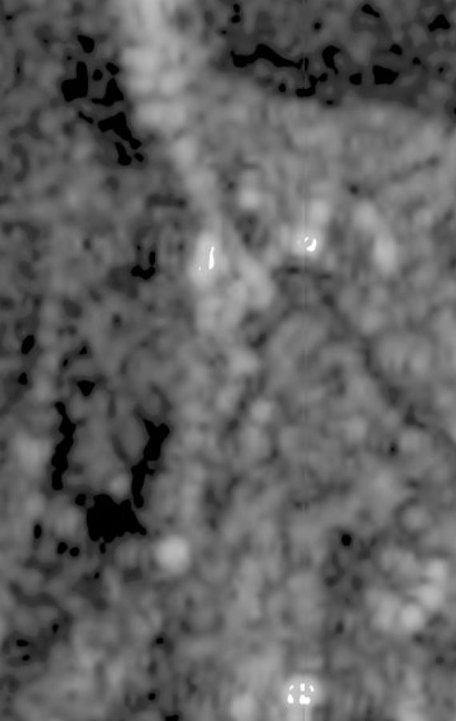

Radar that sees when optical can't — under cloud, smoke or at night. Enhanced Sentinel-1 at 2 m GSD, delivered at 1 m, VV+VH, every ~6 days.
Optical imagery fails exactly when monitoring matters most — under cloud, smoke or at night. Synthetic Aperture Radar sees through all of it, illuminating the surface with its own signal. SkySpera enhances Sentinel-1 C-band SAR to 2 m and delivers it resampled to 1 m, with both VV and VH polarisations and a 10-year archive, across land, seas and the main ocean shipping routes, refreshed roughly every six days. It underpins flood mapping under storm cloud, ground-movement and subsidence tracking, maritime and vessel monitoring, and any task needing a guaranteed — not weather-dependent — observation.
The information content is 2 m GSD; 1 m resampling aligns it pixel-for-pixel with the 1 m visual and DEM layers for overlay and fusion.


Tell us the ground you need to watch — we'll show you what SkySpera can do with it.
Talk to us